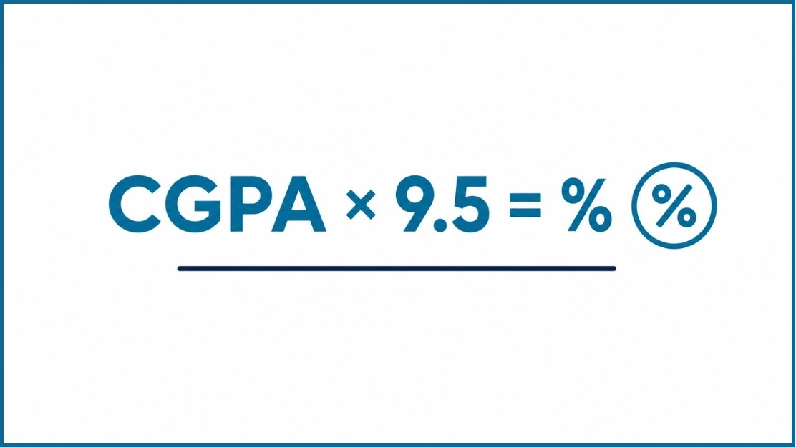

CGPA to Percentage & Percentage to CGPA Calculator
Convert CGPA to Percentage or Percentage to CGPA instantly. Supports 4.0, 4.33, 5.0, 7.0 and 10.0 grading scales. Free, accurate, no sign-up required.
What Is a CGPA to Percentage & Percentage to CGPA Calculator?
This tool converts your percentage marks into CGPA, or your CGPA back into a percentage, whichever direction you need. It works across several grading scales, so you get a quick, consistent estimate no matter which system your university follows.
Grade conversion is simple once you know your scale. Pick your scale (4.0, 4.33, 5.0, 7.0, or 10.0), choose the conversion direction, and type in your number. The result shows up instantly, no manual math required.
What Does This Calculator Do?
It handles two conversions in one place:
Percentage to CGPA
Enter your percentage marks and select a grading scale to instantly get the CGPA equivalent. Useful when applying to institutions that require results in a GPA format.
CGPA to Percentage
Enter your CGPA and get the equivalent percentage instantly. Helpful for scholarship forms, job portals, and international admissions that request percentage scores.
Why Do Students Convert Percentage and CGPA?
Not every university grades the same way. Some report results as percentages, others use GPA or CGPA. So when you're applying somewhere new, for admissions, a scholarship, an exchange program: you'll often need to convert your grade into whatever format they ask for. A calculator just makes that quicker and less error-prone.
University Admissions
Most universities want your grades in a specific format. Converting first means the admissions team reads your application the way it's meant to be read.
Scholarship Applications
Scholarship committees often ask for a percentage equivalent or a particular GPA scale. A quick, accurate conversion means you can fill out the form with confidence.
Student Exchange Programs
International exchange programs usually need your grades converted before they can judge your eligibility.
Credit Transfer Evaluations
Moving credits between institutions or countries? Converting your grades helps the receiving department understand your actual academic standing.
Graduate School Applications
Master's and PhD programs abroad often use a different scale than your home university. Converting keeps your application accurate.
Employment Applications
Many employers and ATS systems ask for a GPA or percentage score. Converting yours helps you fill out job applications correctly and stay competitive.
Supported GPA and CGPA Scales
Universities around the world don't agree on one grading scale, so this calculator covers the most common ones in use today. Just make sure you pick the scale your own institution actually uses before you convert anything.
| Grading Scale | Common Usage |
|---|---|
| 4.0 Scale | Many universities and colleges worldwide |
| 4.33 Scale | Many Canadian institutions |
| 5.0 Scale | Many Nigerian institutions and selected universities |
| 7.0 Scale | Many Australian universities |
| 10.0 Scale | Many universities across India and other regions |
Even two universities on the same 4.0 or 10.0 scale can apply different rules internally, so it's worth double-checking your own institution's policy before you trust the number.
Bangladesh: Most Bangladeshi universities (NU, DU, NSU, BRAC, and others) use a simple proportional formula on a 4.0 scale: Percentage = (CGPA ÷ 4.00) × 100. That's different from India's CBSE formula (CGPA × 9.5), so don't mix them up. To convert your Bangladeshi CGPA, pick "US 4.0 Scale (÷ 4.0 × 100)" from the dropdown: that's the formula your transcript actually uses.
How Percentage and CGPA Conversion Works

How Percentage to CGPA Conversion Works
Your percentage is simply the marks you scored. Your CGPA reflects that same performance, just expressed on a grading scale. The calculator takes your percentage and runs it through the formula tied to whichever scale you pick: because the math genuinely changes depending on the scale.
So the same percentage converted on a 4.0 scale won't match what you'd get on a 10.0 scale. Picking the right scale first is the one step that matters most here.
How CGPA to Percentage Conversion Works
Going the other way is just as easy: pick your scale, type in your CGPA, hit calculate. You'll get an estimated percentage right away: handy if you want to see how your GPA stacks up against percentage-based grading.
Why There Is No Universal Conversion Formula
A lot of students go looking for one formula that works everywhere. It doesn't exist. Every institution sets its own grading policy, so even two universities on the same 4.0 or 10.0 scale can calculate things differently: some go by letter grades, others by percentage ranges, and some factor in course credits while others don't.
That's exactly why results can differ even when the scale looks identical on paper. It's also why this calculator asks you to choose your scale up front: get that right, and the estimate you get back is far more meaningful.
How to Use This CGPA to Percentage & Percentage to CGPA Calculator
You'll be done in under a minute: here's how.
Select Your Grading Scale
Pick whichever scale your university uses: 4.0, 4.33, 5.0, 7.0, or 10.0. This tells the calculator which formula to apply.
Choose the Conversion Type
Tell it which way you're converting: Percentage to CGPA, or CGPA to Percentage. It'll adjust the math automatically.
Enter Your Academic Score
Type in your percentage or CGPA, whichever applies. Worth a quick double-check before you hit calculate.
Click Calculate
Hit the Calculate button and your converted score appears instantly.
Review Your Result
Take a look at the result. Curious how it'd look on a different scale? Switch it and compare: it's a good way to see how grading systems actually differ.
Percentage to CGPA and CGPA to Percentage: Conversion Examples
Here's what the same conversion looks like across a few different scales, just to show how the numbers shift. Keep in mind these are examples based on the standard formula for each scale: your own university's policy might land slightly differently.
Percentage to CGPA: Examples by Scale
| Grading Scale | Example Percentage | Estimated CGPA |
|---|---|---|
| 4.0 Scale | 85% | ≈ 3.4 / 4.0 |
| 4.33 Scale | 85% | ≈ 3.68 / 4.33 |
| 5.0 Scale | 85% | ≈ 4.25 / 5.0 |
| 7.0 Scale | 85% | ≈ 5.95 / 7.0 |
| 10.0 Scale | 85% | ≈ 8.5 / 10.0 |
CGPA to Percentage: Examples by Scale
| Grading Scale | Example CGPA | Estimated Percentage |
|---|---|---|
| 4.0 Scale | 3.5 / 4.0 | ≈ 87.5% |
| 4.33 Scale | 3.5 / 4.33 | ≈ 80.8% |
| 5.0 Scale | 4.0 / 5.0 | ≈ 80.0% |
| 7.0 Scale | 5.5 / 7.0 | ≈ 78.6% |
| 10.0 Scale | 8.5 / 10.0 | ≈ 80.75% (CBSE ×9.5) |
Notice how the same percentage or CGPA gives a different result on each scale: that's just each system running its own formula. Stick with the scale that actually matches your institution.
Common Grade Conversion Mistakes
Most conversion errors come down to a handful of small, avoidable mistakes. Here's what to watch for.
Selecting the Wrong Grading Scale
Picking the wrong scale can throw your whole result off. Double-check your institution's actual grading system before you calculate.
Assuming Every University Uses the Same Formula
It's a common assumption, but it's wrong: universities set their own rules. Go with your institution's official policy whenever you can find it.
Entering Incorrect Values
A simple typo in your percentage or CGPA is enough to throw off the whole result, so give it a quick check before calculating.
Confusing GPA and CGPA
GPA usually covers one term; CGPA is your cumulative score across semesters. Mixing the two up is a common source of conversion errors.
Expecting an Official Transcript Result
This calculator gives you an estimate, not an official record. Your university's transcript is always what counts for admissions, graduation, or scholarships.
Tips for More Accurate Grade Conversions
A few small habits go a long way toward getting a result you can trust.
Confirm Your Scale First
Check your transcript, student handbook, or grading policy to confirm your scale before you convert anything.
Enter Exact Transcript Values
Type in your score exactly as it appears on your transcript: rounding up or down, even slightly, throws off the result.
Select the Correct Conversion Direction
Before you type in your value, make sure you've picked the right direction: Percentage to CGPA, or the reverse.
Double-Check Decimal Values
Watch your decimal points: 8.5 and 85 are two very different numbers, and mixing them up gives a nonsense result.
Compare Within the Same Scale
Only compare results within the same scale. Cross-scale comparisons tend to be misleading.
Use Official Policy for Formal Submissions
For anything formal: admissions, scholarships, job applications: lean on your university's official policy, not just this estimate.
Frequently Asked Questions
Related Grade Calculators
CGPA Calculator
Calculate your full semester-wise CGPA using the standard 4.0 grading scale with multi-semester support and PDF export.
Canadian 4.33 GPA Calculator
Calculate your GPA using the Canadian 4.33 grading scale, commonly used by universities across Canada.
Australian 7-Point GPA Calculator
Convert grades on the Australian 7.0 scale used by most universities across Australia and New Zealand.
Nigerian 5.0 CGPA Calculator
Calculate CGPA using the Nigerian 5.0 grading scale used by universities across West Africa.
10-Point CGPA Calculator
Calculate CGPA on the 10-point scale used by IITs, NITs, VTU, and many Indian universities.
GPA ↔ CGPA Converter
Switch between 4.0 GPA and 10.0 CGPA scales for international university applications and WES evaluations.
Grade Calculator
Convert subject marks to letter grades and GPA, with a built-in prediction engine for your target grade.
North American GPA Calculator
Calculate GPA using the detailed North American scale with plus/minus grade distinctions for US and Canadian institutions.